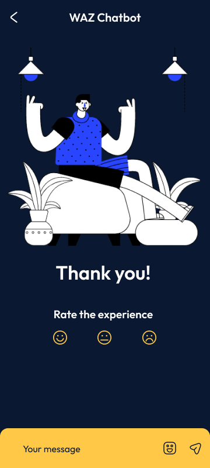
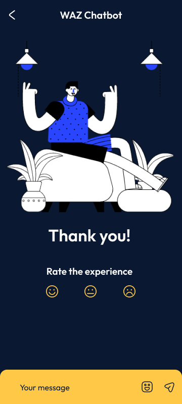
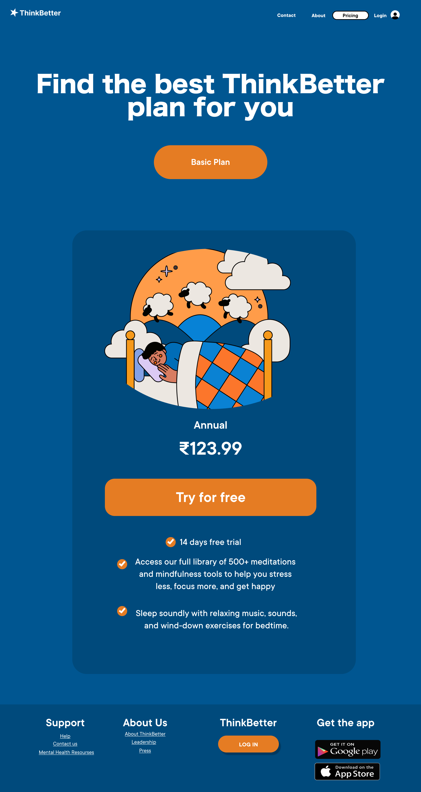
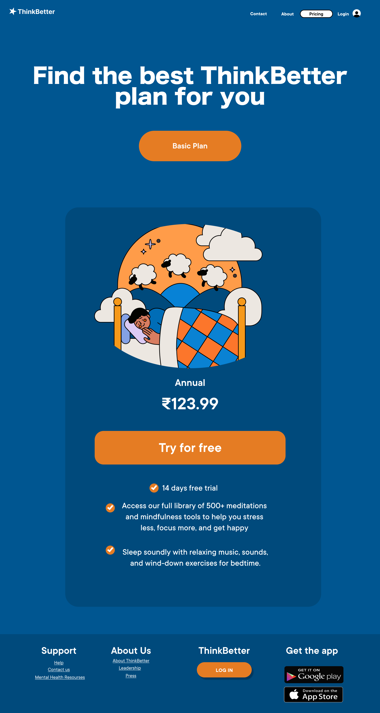

01/ CampusConnect
A campus app that allows anyone to navigate and find their way through the campus.
It is built with an interactive Augmented Reality(AR) map of the college and features a chatbot
that answeres simple queiries of students and teachers alike. It also serves as a social app where
students can post their queiries and recieve updates.
 


 
